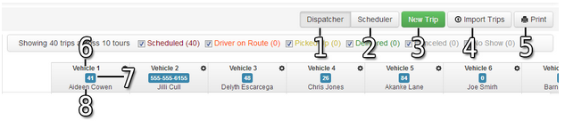
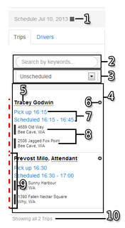
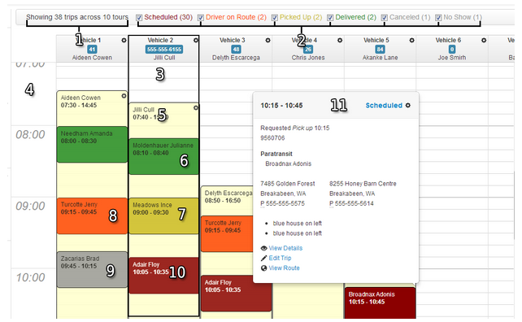
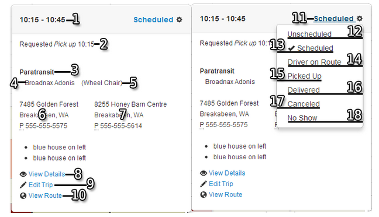

Scheduler navigation
The scheduler board is where Dispatchers will spend the majority of their time. This view shows the dispatcher an overview of all the scheduled trips, unscheduled trips and driver schedules.

- Dispatcher Tab This is used by dispatchers when they are marking trips as driver on route, picked up delivered, canceled or no show.
- Scheduler Tab Used to see heat map colors on the trip tickets when scheduling trips.
- New Trip Click this button to enter a new trip.
- Import Trips Use this button to import trips from brokers that you have set up.
- Print Use this button to print the every trip that is Scheduled, Driver on Route, Picked Up and Delivered.
- Vehicle name or number.
- Contact information for the driver.
- Name of the first driver for this tour.
Scheduler queue

- Current board’s date. Select this to view future or past days.
- Trip Search. Type in the name of a client, city, or address to search trips for this day.
- Drop-down Filter. Use this filter to narrow your search to Any Status, Unscheduled, Scheduled, Driver on Route, Picked Up, Delivered, Canceled or No Showed.
- Trip Queue. This will show you any trip for the current day depending on the filter setting for #3. By default it will show Unscheduled trips.Each Leg of a client’s trip will have its own ticket in the trip queue. In the image above we see two tickets in the box labeled #4.
- Client name. When you hover over the name with the mouse it will tell you the mobility aids this client uses.
- Options menu. Whenever you see this icon you can click it for extra options.
- Requested Drop Off or Pick Up Time. This is the time the client requested that they be picked up.
- Origin Address and Destination Address. These are the requested pick up and drop off addresses.
- Status indicator. This is a quick way to see the status of the ticket. The color will correspond to the status on the schedule board.
- This will tell you how many trips are visible in the queue.
Scheduler board

- Scheduled Trip Count. This tells you how many trips are on the board for the day.
- Trip Status Toggles. These will break down how many trips are in each status. These will also allow you to show or hide all trips in each status. If the box is checked the trips are shown. If it is not checked the trips are hidden.
- Tour. Everything inside this box is a single tour. One vehicle is normally assigned to each tour.
- Time axis labels.
- Driver Tour. The driver’s tour is placed on the tour for the vehicle. You can have more than one driver tour on a vehicle tour.
- Trip ticked marked as Delivered (Green).
- Trip ticked marked as Picked Up (Yellow).
- Trip ticked marked as Driver on Route (Orange).
- Trip ticked marked as Canceled or No Showed (Grey).
- Trip ticked marked as Scheduled (Red).
- Extended Trip Information Box. When you hover the mouse over a trip on the scheduler an extended trip information box will appear.
Trip tooltips

- Scheduled Time on Board. This is the time you have this trips scheduled on the schedule board.
- Requested Pick Up or Drop Off Time. This is the time the client has requested to be picked up or dropped off.
- Account Name. This is the name of the account that the client is assigned to.
- Passenger Name.
- Mobility Aids. This will show any and all mobility aids this client needs or uses.
- Origin Address. Where the passenger is being picked up.
- Destination Address. Where the passenger is being dropped off.
- View Details. This will open up the details screen for this trip. You would use this screen to get to the parent trip to edit subscriptions.
- Edit Trip. Use this if you need to make a change to this ticket only.
- View Route. This will open a Google map showing the route from the pickup address to the destination address. This map will also show you the mileage and approximate driving time.
- Trip Status Indicator. This is where you will change the ticket from scheduled to driver on route to picked up etc.
- Unscheduled. This will take the trip off your schedule board.
- Scheduled. This is the default status when you place a trip on the schedule board.
- Driver on Route. This will mark the ticket as driver on the way to pick up client.
- Picked Up This will mark the ticket as client picked up and on board the vehicle.
- Delivered. This will mark the ticket as passenger delivered.
- Canceled. This will mark the ticket as canceled.
- No Show. This will mark the ticket as a no show.